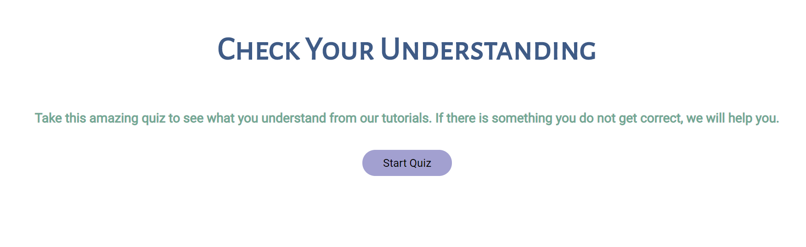

Running our Project
CLICK HERE to go to our Stay Connected website
MVF: Welcome Quiz
You will be greeted by the intro quiz tutorial, which teaches the user how to complete the welcome quiz. You can choose to skip or read through it.
The next page will be the intro quiz, which customises the website to tailor your needs. You can choose to skip or select changes.
MVF: Tutorials
After the intro quiz, the user will be led to the home page where, if they scroll down, can find a selection of tutorials to follow. Choose any tutorials you wish to view.
After choosing a category, you will be led to the tutorials under that category. Select one to be led to the tutorial.
After selecting, you will have arrived at the tutorial feature.
The user can view the video, which is a demonstration of the instructions. Under the video, there is a help button which leads the user to mini tutorials.
Below the video, are the step by step instructions along with images.
Under the last step, there is another button that leads the user to assistance if they need it.
There is a button that leads the user to the post quiz where they can test their knowledge.

There is also an option for the user to print out or download the guide as a PDF. Under that, there is a button which leads the user back to the top of the page.
MVF: Post Quiz
User will be lead to the post quiz page from the Start Quiz button on any tutorial page.
When the user arrives on the quiz page, there will be a multiple choice quiz that they can complete.
The user can also immediately check whether their answer is right or wrong by clicking the Check Answer button.
MVF: Printable Guides
Users will also have an option to print out the instructions or save them as a PDF, which they can do so by clicking the PDF icon. There is also a button called How to
use PDF guides, where if the user clicks on it, they will be led to a mini tutorial.
By clicking the icon, a window will pop up where they can choose to print or download.
EVF: Mini Tutorials
Usually the user will be led to the mini tutorial page from the help button in tutorials.
Users can view a mini tutorial by clicking on the rectangle boxes with a title.